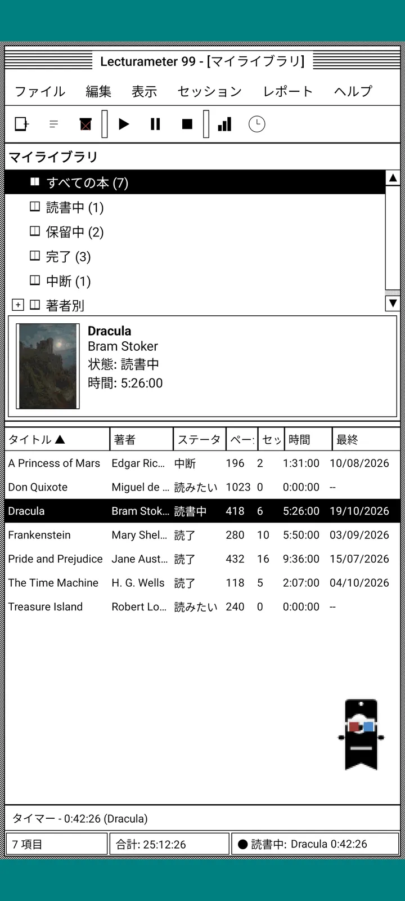
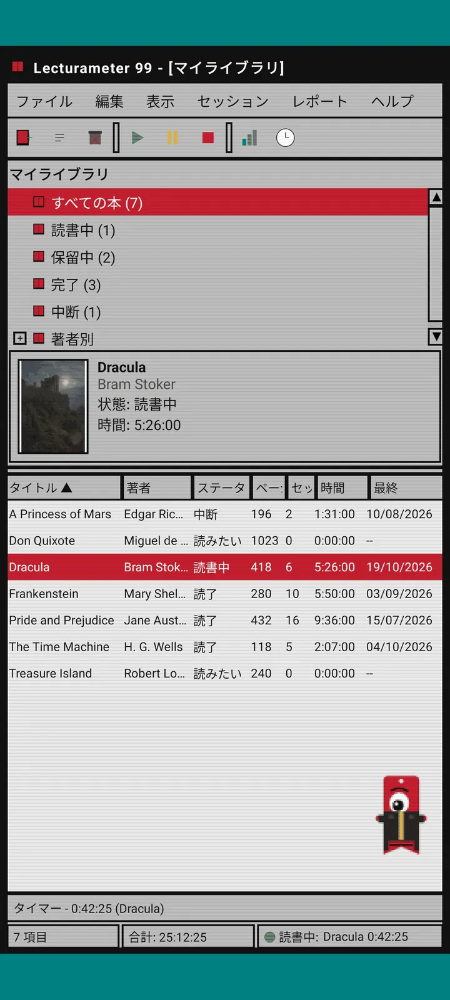
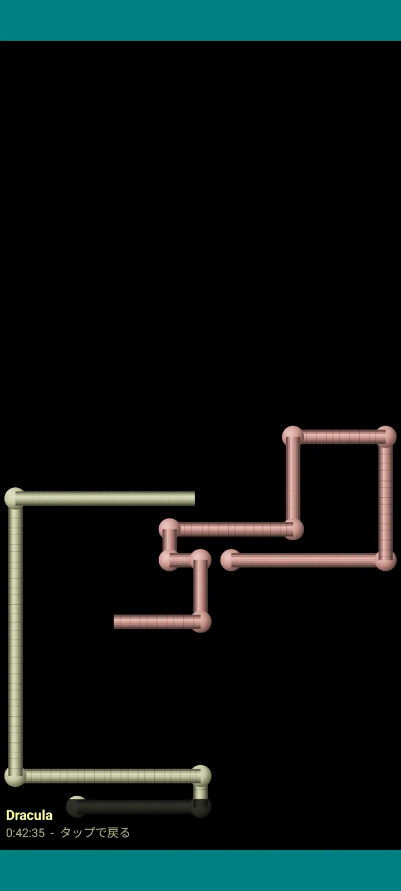

Lecturameter 1999
まるで1999年にCD-ROMからインストールしたようなLecturameter。ウィンドウ、メニュー、表がそろった、アプリの別クライアントで、あなたの本物のバックアップを開けます。

これは何？
九十年代末のデスクトッププログラムが、あなたのスマホで動きます。青緑のデスクトップにウィンドウがひとつ。メニューバー、ツールバー、フォルダーツリー、ぎっしり詰まった表、ステータスバー。
- ライブラリツリー：すべての本、読書中、保留中、読了、中断、著者別
- タイトル、著者、ステータス、ページ数、セッション、時間、最後に読んだ日の表。列の見出しをタップして並べ替え
- Lecturameterと同じカタログを使った本物の本の検索
- LecturameterのバックアップとGoodreadsのCSVをインポート・エクスポート。データは何も失わずに出し入れできます

なぜ作ったのか
ひとつの実験です。本物のアプリには手を加えず、まったく違うデザインの前提でLecturameterのアイデアをゼロから作り直してみました。いくつも作った再解釈の中で、1999年版がいちばん気に入ったので、楽しみながら仕上げて完全なクライアントにしました。わざとLecturameterよりシンプルにしてあります。あくまで実験なので、基本的にこれ以上の開発は予定していません。
- 緑の液晶表示がついたフローティングウィンドウのタイマー。動かせて、タスクバーに最小化でき、ステータスバーでカウントを続けます
- 止めると、セッション保存のダイアログでページ数を聞かれ、Lecturameterと同じようにペースを計算します
- 保存したセッションはLecturameterのセッションです。Lecturameter 1999のバックアップをエクスポートしてLecturameterでインポートすれば、最新のアプリに戻せます。

読書レポート
統計は印刷されたレポート風：概要、ブロックバーで示す本ごとの時間、一日あたりのページ数での速度、文字で描いた一年のカレンダー、そして直近七日間。

セッション履歴
セッションをプラスとマイナスで開閉するツリーに本ごとにまとめ、上部に五つの数値を表示：セッション、合計時間、ページ数、一分あたりのページ数、一日あたりのページ数。

セッションを保存
日付、分、最初と最後のページ、コメント。入力しながら概要がページ数とペースを計算します。最後のページに達すると、本を読み終えたかどうか聞いてきます。

Pagi 99
Pagiも1999年へタイムスリップ。当時のオフィスアシスタントのように、ドット絵になって画面の中を自由に動き回ります。ドラッグでき、タップするとひとこと話し、黄色い吹き出しでヒントを見せてくれます。
テーマ
クラシック98は無料で、最初から設定されています。パックではさらに六つのテーマが追加され、それぞれ専用の背景とサウンドがあります。

「表示」メニューから選択
「表示」→「テーマ...」で七つのテーマのウィンドウが開きます。変更はすべてのウィンドウ、タイマー、Pagiに一瞬で反映されます。
- クラシック98（無料、デフォルト）：グレーのウィンドウ、紺色のタイトルバー、青緑のデスクトップ
- テーマパック：1984、ガムドロップ、メモリー、タワー、コア、8ビット
- どのテーマにも専用のデスクトップ背景と、タップ、ウィンドウ、タイマー用の専用サウンドがあります
- 静かに読みたいときは「表示」→「テーマのサウンド」でオフにできます

クラシック98
グレーのウィンドウ、紺色のタイトルバー、青緑のデスクトップ。無料で、アプリを開いたときのテーマです。

1984
ドット模様と四角いウィンドウの、一ビット白黒デスクトップ。

ガムドロップ
半透明のカラフルなプラスチック、丸いボタン、背景にはストライプ。

メモリー
九十年代のディスク式ゲーム機のメニューを、濃いブルーで。

タワー
もうひとつの九十年代ディスク式ゲーム機。夜の青に水色のライン。

コア
黒と緑のコンソール。決して消えない画面のように。

8ビット
大きなピクセル、少ない色数、カクカクした文字。

買う前に試せる
ロックされたテーマをタップすると、アプリ全体がそのテーマに変わります。買わずに閉じれば、前のテーマに戻ります。
スクリーンセーバー
タイマーが動いていて、スマホを放置しているときだけ表示されます。待ち時間は1分、3分、5分、またはなし。ワンタップで戻れて、タイマーはそのままカウントを続けます。

空飛ぶ本
ドット絵の本が表紙をはばたかせて、黒い画面を横切ります。

文字の宇宙
さまざまな文字が、星空のように流れていきます。

ページパイプ
ページでできたパイプが、画面がいっぱいになるまで伸びていきます。

跳ねるPagi
Pagiが画面の端で跳ね返ります。

読書時計
セッション時間を大きな液晶数字で。

Pagiの衣装
Pagi 99の衣装は八種類。「表示」→「Pagiの衣装...」で選べて、買う前に試着もできます。
- カセットプレーヤー
- 後ろ向きキャップ
- 3Dメガネ
- ネオンのサングラス
- 手にフロッピーディスク
- 革ジャン
- 携帯ペット
- 段ボールの王冠
ストア
アプリは無料で、読書の記録に必要なものはすべてそろっています。購入できるのは見た目を変えるものだけ。
アプリのすべてを、期限なしで。
- ライブラリ、検索、タイマー、セッション
- 読書レポートとセッション履歴
- LecturameterのバックアップとGoodreadsのCSVの入出力
- クラシック98テーマとPagi 99
- アカウント不要、広告なし
買い切りで、サブスクなし。
- テーマパック、€3.49：背景とサウンドつきの6テーマ、さらにスクリーンセーバーも
- スクリーンセーバー、€1.99：5種類のスクリーンセーバー
- Pagiの衣装、€1.99：8種類の衣装
- 1999まるごと、€4.49：テーマ、スクリーンセーバー、衣装
コーヒーをおごってくれる方は、ヘルプメニューから任意でチップを。
テーマと衣装は、買う前にその場で試せます。買わずに閉じれば元に戻ります。
Lecturameterとの違い
Lecturameterと同じ
- 同じデータ：本、セッション、ステータス、スコア、メモ。バックアップファイルはどちらのアプリでも共通です。
- タイトルや著者で本を検索。
- 本物のタイマー：バックグラウンドでも、アプリを閉じてもカウントを続けます。
- アカウント不要、広告なし。ネット接続は本の検索のときだけ。
- Lecturameterと同じ言語に対応。
1999版だけ
- 1999年のデスクトップ風インターフェース。Materialはなし。
- 本物のウィンドウ：ドラッグして、最小化して、×で閉じられます。
- テキストの読書レポートと、文字で描いたカレンダー。
- 長押しでコンテキストメニュー、キーボードをつなげばショートカットも。
- ヒントの吹き出しを出すドット絵のPagi 99。
- 専用の背景とサウンドがあるオプションのテーマ、タイマー作動中のスクリーンセーバー、Pagiの衣装。
あえて入れていないもの
- Proもサブスクもなし。読書の記録はすべて無料で、ストアで売っているのは見た目だけ。
- チャレンジ、Bingo、年間Wrapped、ウィジェットはありません。
- 没入セッション、環境音、Google Driveへのバックアップはありません。バックアップはファイルとして保存されます。
クローズドテスト
Lecturameter 1999はGoogle Playでクローズドテスト中です。iOS版は後日、時期は未定です。
- グループに参加 groups.google.com/g/lecturameter-1999
- テスターとして登録： play.google.com/apps/testing/com.lecturameter.r1999
- インストールはこちらから： Google Play
Google Playでクローズドテスト中、iOSは後日。 ブログ記事を読んで 、生まれた経緯とこれからのことをチェックしてください。